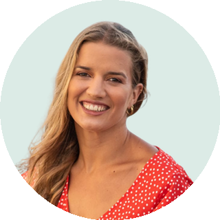

Florencia Sagasti
Conducción y producción general
Periodista, comunicadora y actriz. Vive en Punta del Este hace 12 años y conduce el magazine periodístico de Concierto Punta FM. Practica surf, skate, hockey, navegación y running.